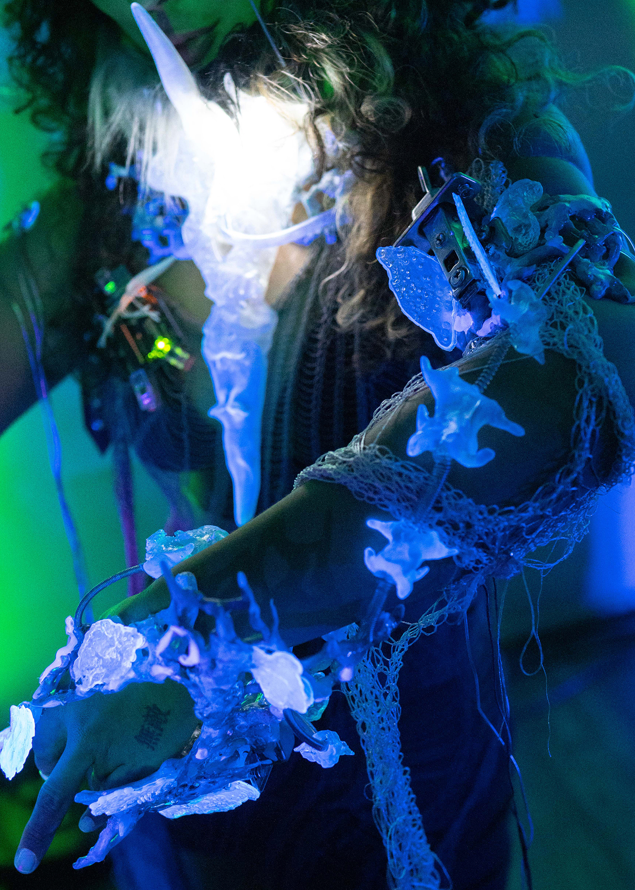
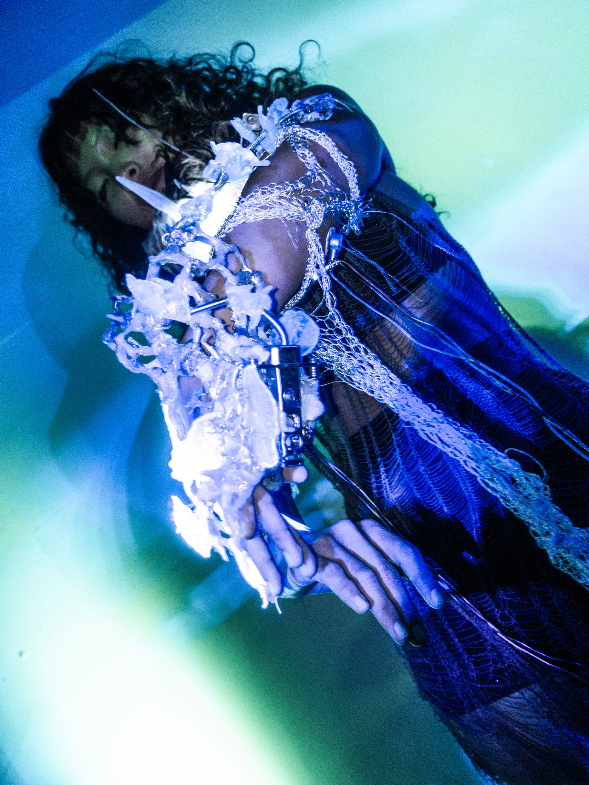
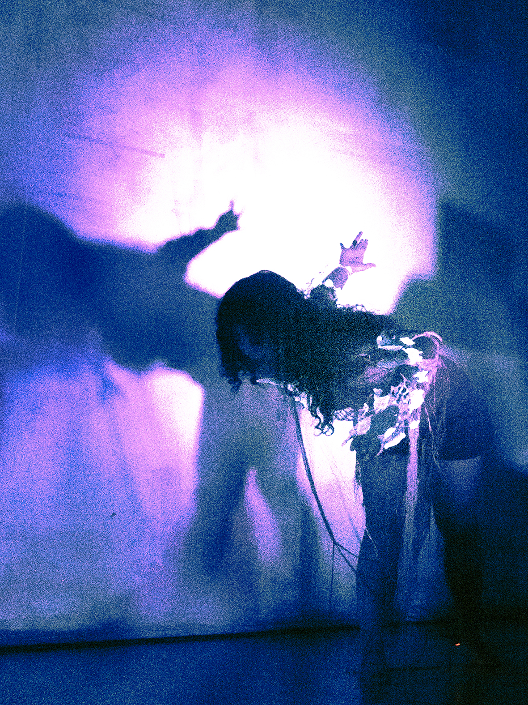

It's a sound performance project that Roise Muhan Yuan @c6r.6rd and song xin plan to carry forward in the future.
Concept:This piece was inspired by a skin condition that Rosie have, which has caused the texture of the skin on parts of the body to change permanently. The altered skin texture reminds her of an armor, merged with the body. By adding fictional body structures with enhanced functions to the body to perform, we created a piece of embodied instrument
that draws its concept closer to Peter-Paul Verbeek’s concept of hybrid intentionality. The instrument, once put on, is something that becomes one with the performer. Through this fusion, a new identity is created, where this bodily instrument the performer, together become a trans-humanistic being. In other words, the concept of the instrument disappears and becomes part of the performer.
Technical:We used the Myo armband to send the muscle EEG signals to a Max patch, which triggers and controls the development of sounds. And also we use bare Myo armband (MyoWare 2.0 Muscle Sensor) to control the different sounds.
*MyoWare Muscle Sensor
*Max MSP
*Arduino
*Zbrush


